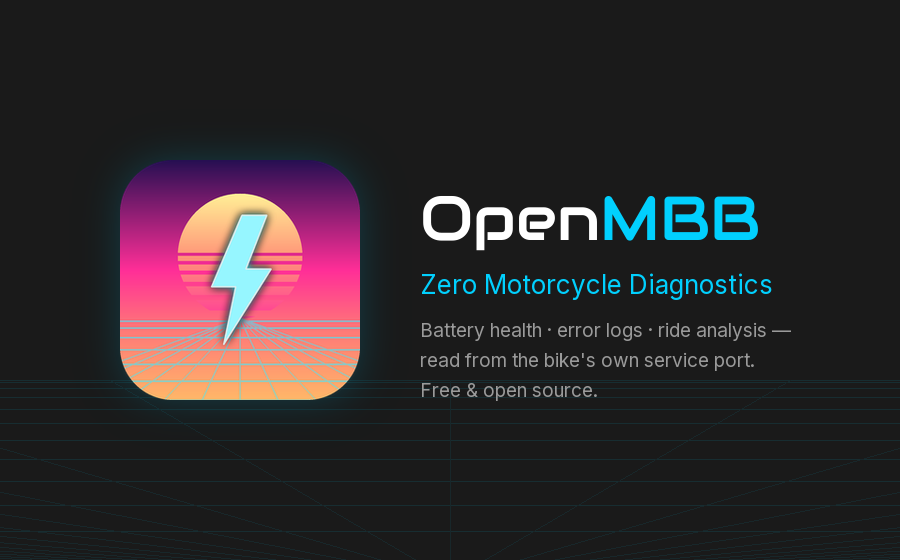
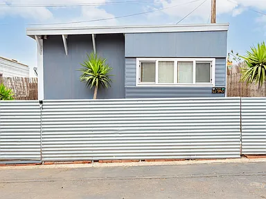

Open-source parts and software,
documented well enough to build from.
Diagnostics tools for electric motorcycles, 3D-printed parts for cars that no longer have a parts catalog, and honest write-ups of everything else I take apart. Models, wiring, print settings, and source — all free.
Start here
The three things most people come looking for.

OpenMBB — Zero motorcycle diagnostics
Your Gen2 Zero will tell you almost everything about itself over its service port, but only dealer tools normally speak that language. OpenMBB reads it: battery health, motor-controller state, error logs, ride history. Reads are unrestricted; writes are whitelist-only and triple-gated, because the tool can brick a motorcycle. Ships with a simulator so you can try the whole thing with no bike attached.
Free · Open source · Windows & Linux

Printable parts for the SG Forester
Amber auxiliary light kits, vented headlight caps, a glove-box shelf. Printed in ASA, fitted to a real car, and published with the CAD source, bill of materials, print settings, wiring diagrams, and step-by-step install guides — everything needed to build one without asking me a single question.
Free · Open source · Thingiverse & GitHub

The project archive
Everything else: a 1957 trailer restoration, supermoto conversions, an aluminium fishing boat brought back from the dead, surfboard repairs, engine work, a tiny home. Written up as they happened, with what actually went wrong included.
Automotive · Motorcycles · Residential · Watersports
Who makes this
I'm Ron Durham — a manufacturing engineer in San Diego who builds software for physical hardware: production test systems, device diagnostics, and tooling that turns an expert-only procedure into something anyone can run. SMITHtRONiC is where the work I can publish lives.